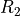
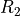
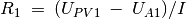
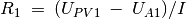
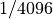
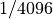

Measure resistance by comparison¶
Objective
Learn to apply Ohm’s law to find the value of an unknown resistance by
comparing it with a known one. Voltage across a resistor is given by
V = IR . If same amount of current is flowing through two different
resistors, the ratio of voltages will be the same as the ratio of
resistances,  .
.

Procedure
- Connect the unknown resistor R from PV1 to A1.
- Connect
 () from A1 to Ground.
() from A1 to Ground. - Set PV1 to 4 volts.
- Measure voltage at A1. Calculate the current
 .
Value of .
.
Value of . - Select Electrical->Plot I-V curve from the menu to get an I-V plot
Discussion
What is the limitation of this method ? How do we choose the reference
resistor ? suppose the unknown value is in  , what will be the
voltage drop across a reference resistor ? Our voltage
measurement is having a resolution of .
, what will be the
voltage drop across a reference resistor ? Our voltage
measurement is having a resolution of .
We will use this method later to measure the resistance of solutions, using AC.